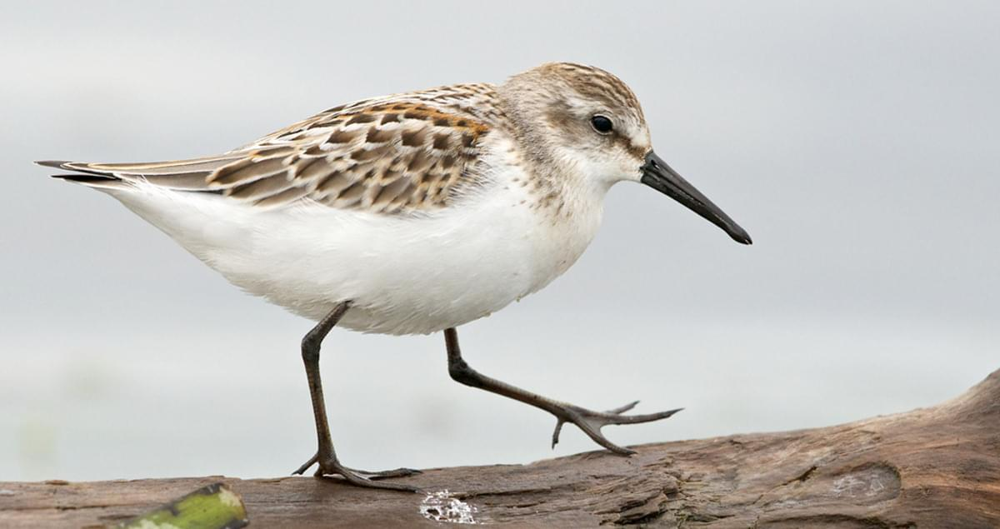

Western Sandpiper
The western sandpiper is a small shorebird. The genus name is from Ancient Greek kalidris or skalidris, a term used by Aristotle for some grey-coloured waterside birds. The specific mauri commemorates Italian botanist Ernesto Mauri.
